ბიოგრაფია
არქიმედე იყო ძველი ბერძენი მათემატიკოსი და მეცნიერი. იგი დაიბადა ძვ.წ. III საუკუნეში ქალაქ სირაკუზაში. განათლება მიიღო ალექსანდრიაში, რის შემდეგაც დაბრუნდა მშობლიურ ქალაქში და სიცოცხლის ბოლომდე იქ მოღვაწეობდა.
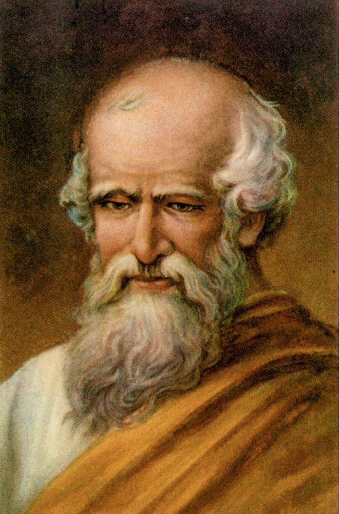
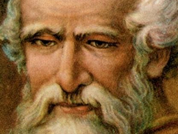
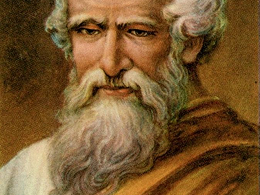
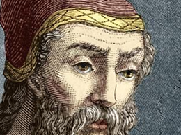
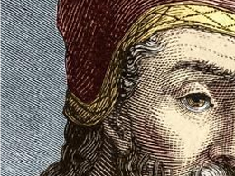
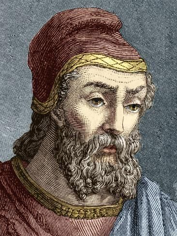
მოღვაწეობა
არქიმედე მუშაობდა გეომეტრიის, მექანიკისა და ჰიდროსტატიკის სფეროებში. იგი ცდილობდა რთული პრაქტიკული პრობლემების გადაჭრას მათემატიკური მეთოდების გამოყენებით.
მიღწევები
არქიმედემ შეიმუშავა ფიგურების ფართობისა და მოცულობის გამოთვლის ახალი მეთოდები. მან შეძლო π-ის მნიშვნელობის ზუსტი დაახლოება და შექმნა მრავალი ინოვაციური მექანიკური მოწყობილობა.
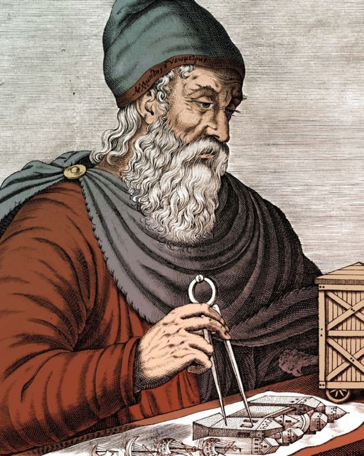
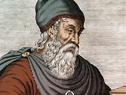
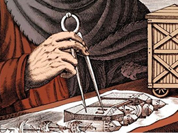
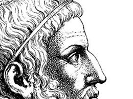
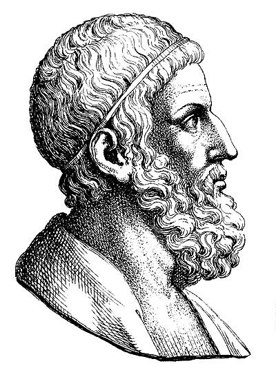
წვლილი
არქიმედემ ჩაუყარა საფუძველი ინტეგრალური აზროვნების ელემენტებს გეომეტრიაში. მისი მეთოდები მოგვიანებით გამოიყენეს ანალიზის განვითარებაში და მნიშვნელოვან გავლენას ახდენდა ევროპულ მათემატიკაზე.
ფაქტები
არქიმედე იმდენად იყო ჩაფლული კვლევებში, რომ ხშირად ავიწყდებოდა ყოველდღიური საქმეები. გადმოცემის მიხედვით, იგი პრობლემებზე ფიქრს ხატვით აგრძელებდა კიდეც მიწაზე.
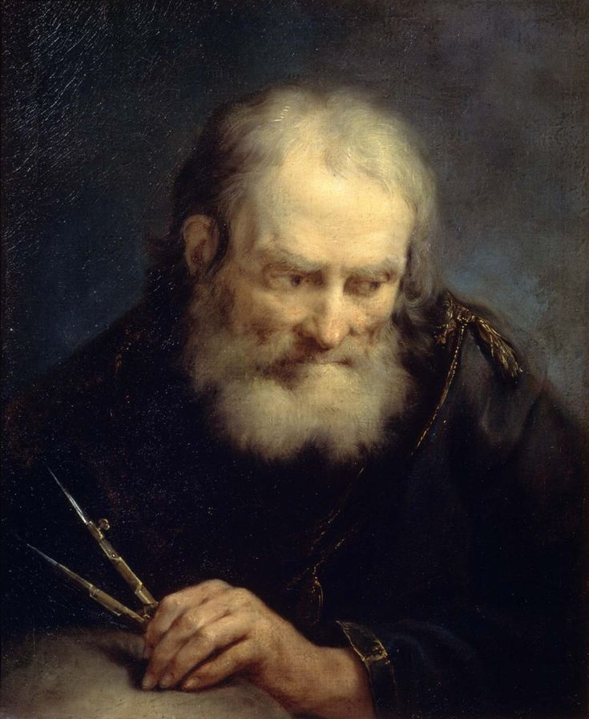
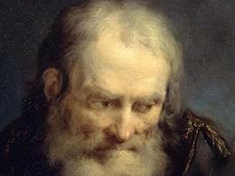